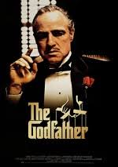

|
EşkiyaEşkiya, hapse düşmesine neden olan arkadaşının peşine düşen bir adamın hikayesini anlatıyor. 35 yıl önce Cudi dağlarında bir grup eşkiya yakalandı ve hapse atıldı. Yıllar içinde kimi hastalıktan, kimi hesaplaşma sonucu öldü. Biri hariç... 35 yıl sonra Hapisten çıkınca Baran’ ın ilk işi köyüne dönmek olur. ... |
 |
Yeşil YolYeşil Yol, bir hapishane görevlisi ile bir mahkumun öyküsünü anlatıyor. Paul Edgecomb'un hapishanedeki görevi, idama mahkum edilen mahkumları son yolculuklarına uğurlamaktır. Çalıştığı yıllar içerisinde yüzlerce mahkumu idam etmiştir. Bir gün John Coffey isimli korkutucu görünümlü bir adamla tanışır. Ancak Coffey'in bu ... |
|  |
BabaBaba, 40’lar ve 50’lerin Amerika’sında, bir İtalyan mafya ailesinin destansı öyküsünü konu alıyor. Don Corleone’nin kızı Connie’nin düğününde, ailenin en küçük oğlu ve bir savaş gazisi olan Michael babasıyla barışır. Bir suikast girişimi, Don’u artık işleri yönetemeyecek duruma düşürünce, ailenin başına .. |